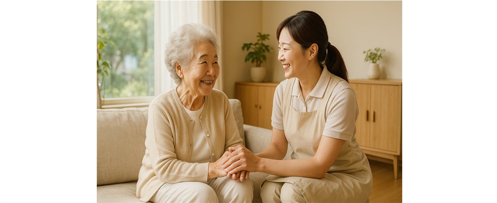
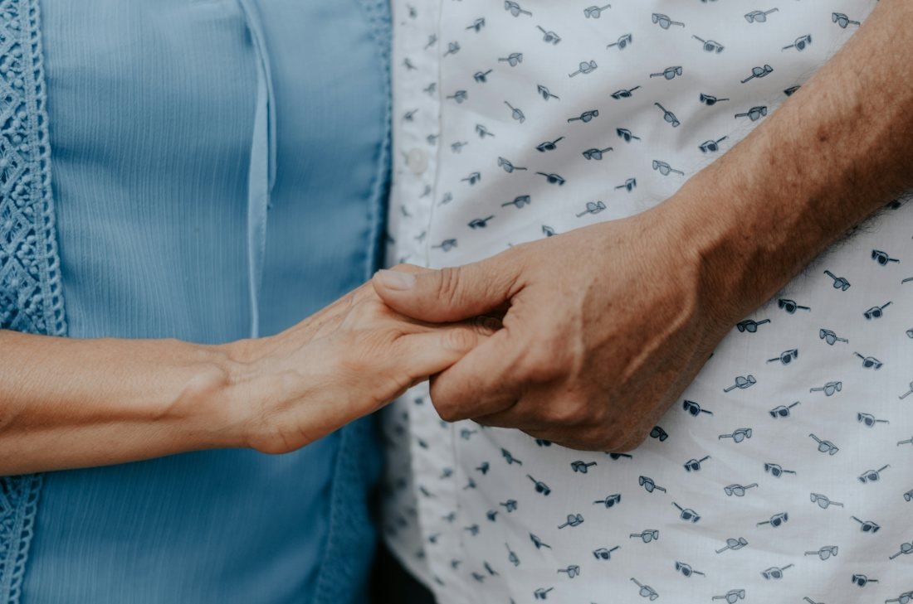

방문요양
식사·청결·운동 보조, 말벗, 외출과 병원 동행까지 일상생활 전반을 돕습니다. 치매·파킨슨 케어 경험이 있는 요양보호사를 우선 연결합니다.
- 식사·위생
- 운동·재활 보조
- 병원 동행
방문요양과 방문목욕으로 어르신의 일상을 돕고, 가족의 돌봄 부담을 함께 나눕니다.
상담 전화 031-772-1689 평일 오전 9시 ~ 오후 6시

한 가지라도 해당되면 먼저 상담해 보세요.
노인장기요양보험 재가 서비스를 중심으로, 어르신의 상태와 가족 상황에 맞춰 조합합니다.
식사·청결·운동 보조, 말벗, 외출과 병원 동행까지 일상생활 전반을 돕습니다. 치매·파킨슨 케어 경험이 있는 요양보호사를 우선 연결합니다.
전용 장비와 2인 1조로 체온 유지와 낙상 예방까지 챙기며, 거동이 어려운 분도 안전하게 목욕하실 수 있습니다.
등급이 아직 없으셔도 괜찮습니다. 서류와 방문조사 준비를 함께합니다.
자세히 보기돌봄으로 지친 가족에게 상담과 정보, 쉴 수 있는 방법을 안내합니다.
자세히 보기방문요양·방문목욕 선생님을 상시 모집합니다.
자세히 보기전화 한 통이면 시작됩니다. 진행 상황은 단계마다 알려 드립니다.
어르신의 건강 상태와 필요한 돌봄을 여쭙니다.
장기요양등급 신청 서류와 방문조사를 함께 준비합니다.
등급 결과에 맞춰 계획을 세우고 요양보호사를 연결합니다.
정기적으로 살피며 필요할 때마다 계획을 조정합니다.
더 궁금한 점은 전화로 편하게 물어보세요.
네, 가능합니다. 먼저 어르신 상태를 여쭙고, 등급 신청에 필요한 서류와 방문조사 준비를 처음부터 함께 안내해 드립니다.
본인부담금은 장기요양등급, 이용 시간과 횟수, 소득 수준 등에 따라 달라집니다. 상담하실 때 어르신 상황에 맞춰 자세히 안내해 드립니다.
어르신의 건강 상태와 생활 습관, 성향을 고려해 연결합니다. 치매·파킨슨 케어 경험이 있는 요양보호사를 우선 배정하고, 정서 안정을 위해 담당자를 되도록 바꾸지 않습니다.
불편한 점이 있으면 센터에 말씀해 주세요. 상황을 확인하고 어르신과 가족이 편하실 수 있는 방법을 함께 찾겠습니다.
전용 장비를 갖추고 2인 1조로 방문합니다. 시작 전 컨디션을 확인하고, 물 온도와 이동 동선을 정한 뒤 목욕부터 보습, 주변 정리까지 마무리합니다.
평일 오전 9시 ~ 오후 6시에 031-772-1689으로 전화 주세요. 센터 방문 상담을 원하시면 전화로 시간을 정한 뒤 찾아오시면 됩니다.